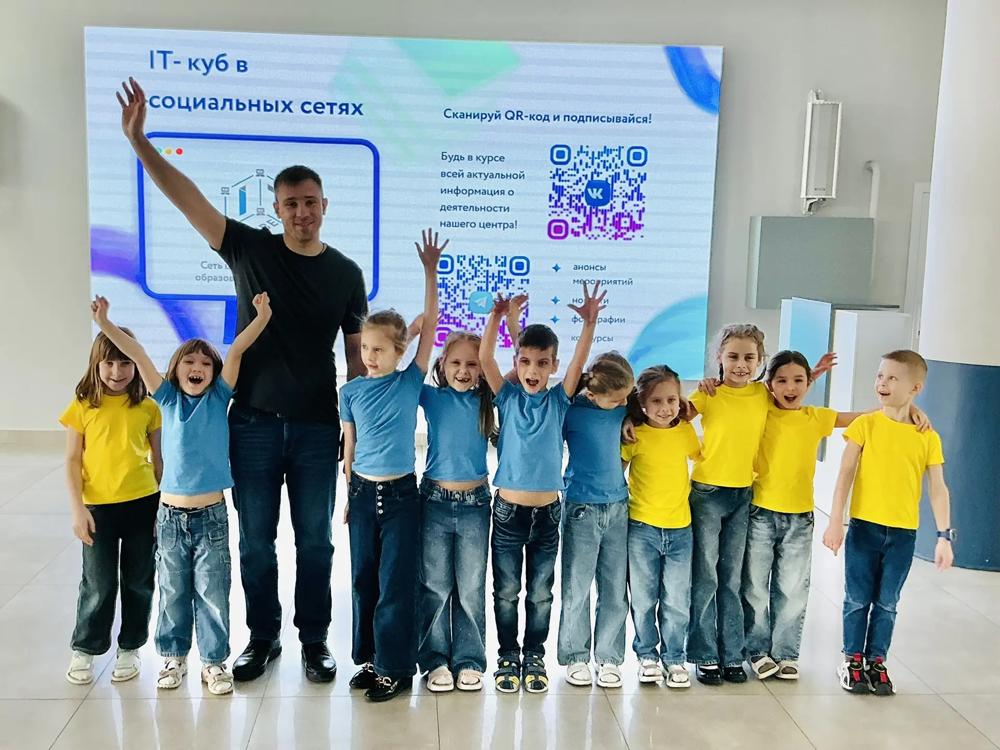

Экскурсия для детского сада номер 50
03.02.2026

В прошлую пятницу, 30 января, любознательные дошкольники из детского сада № 50 совершили удивительное путешествие в мир высоких технологий и побывали в гостях у «IT-Куба». Их ждало настоящее волшебство: знакомство с 3D-моделированием и работающими 3D-принтерами. Дети воочию увидели, как цифровой чертёж превращается в реальный предмет. А педагог центра, Евгений Валерьевич Ковальцов, устроил для ребят весёлый челлендж — они тестировали скорость печати в программе Stamina! Маленькие пальчики старательно выстукивали буквы на клавиатуре, делая первые шаги в компьютерной грамотности. Это был день потрясающих открытий, который, мы надеемся, зажжёт в детях искру интереса к цифровому творчеству и инженерному мышлению.